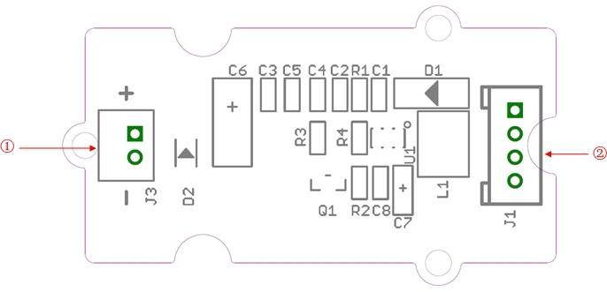
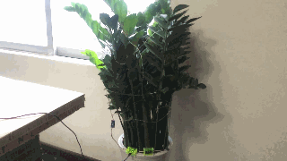

Grove - LED String Light
The Grove - LED String Light module is essentially an LED driver for the LED string lights included in the pack. Working voltage of the module is 3.3V/5V. However, the LED string lights require a working voltage of 12V. Therefore, this module uses a AIC1896 current mode step up DC-DC Converter to provide the requisite voltage to the LED string lights. The LED string light is 5 meters in length and has 50 RGB LEDs on it connected equidistant to one another. You can use these to dress a Christmas tree, light your party or to decorate your room.
Features
- Used in conjunction with LED string lights
- LED String lights of 5 meters length included with the pack
- 50 RGB LEDs connected at equal distances along the entire length of 5 meters give a colorful appearance
- JST 2.0 Interface used to connect the LED String lights with the driver module
- Uses Standard 4-pin Grove Cables to connect to other Grove modules
Interface Function

- ① JST 2.0 interface: Used to connect to LED String Lights
- ② Grove interface: HIGH on SIG (Pin 1) turns the LED String Lights ON, LOW turns them OFF
Usage
Follow these steps to build a sample circuit using this module:
- First connect the LED string lights to the Grove - LED String Light module using the JST2.0 two-wire interface.
- Connect the LED string lights module to the output side of your circuit (to the right of the power module). On the input side of the circuit, you may use a range of sensor based input modules (Grove - Light Sensor, Grove - Sound Sensor, Grove - Button or Grove - Slide Potentiometer).
- Power up the circuit.
- LED String lights light up when the input module supplies a trigger:
- If using with a light sensor connected directly to the input side of the circuit, you should see the LED light up in bright light. If you want the lights to light up in the dark, add a Grove - NOT module between the light sensor and the power module.
- If using with a sound sensor, you should see the LEDs light up on detecting sound. Again, if you want to reverse the function, or in other words, if you want that the lights should be ON at all times except when there is a sound, add a Grove - NOT module between the sound sensor and the power module.
- If using with a momentary switch like the one on the Grove - Button module, simply press the button to light up the string lights.
- If using with a slide potentiometer, move the slider from the GND position to VCC and see the brightness of the lights increase as the supplied voltage increases.
Below is an illustration of a Grove circuit built using the Grove - USB Power power module:

If you do not have the Grove - USB Power module, use the Grove - DC Jack Power module instead to turn ON the LED string lights.
Availability
This Grove module is available as part of the following Grove Kit Series:
Alternatively, it can be bought stand-alone at the Seeed Studio Bazaar.
Resources
Copyright (c) 2008-2016 Seeed Development Limited (
www.seeedstudio.com /
www.seeed.cc)
This static html page was created from http://www.seeedstudio.com/wiki